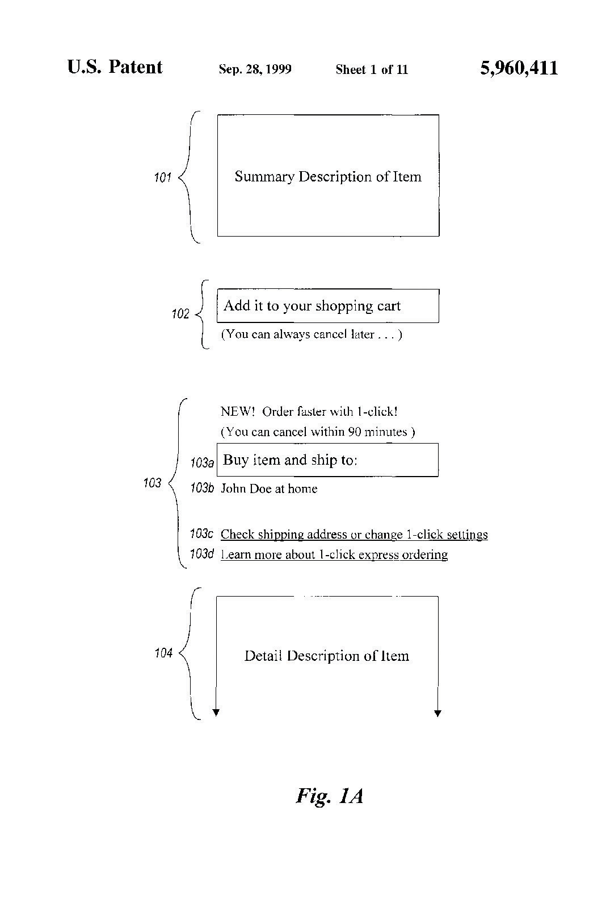

Imagine that you invented the Apple iPhone 4. If you invent a patentable item that is useful, new, and nonobvious, and if you are capable of describing it in clear and definite terms, you may wish to protect your invention by obtaining a patent. A patentA federal right granted to inventors for processes, machines, and compositions of matter. grants property rights to the inventor for a specified period of time, with a utility patentThe most common type of patent, awarded for inventions or improvements to methods, processes, machinery, and compositions of matter. and a plant patentA unique patent right granted to inventors of new forms of plants. expiring twenty years following the original patent application and a design patentA unique patent right granted to protect the look, not functionality, of an invention. expiring fourteen years afterward. A patenteeHolder of a patent. owns a patent.
However, if you invented the Apple iPhone 4 while employed to perform creative and inventive work, then any patents obtained with respect to your work would be assigned to your employer. Many inventors and designers work for employers in creative and inventive capacities. This arrangement allows innovative ideas to be adequately funded in trade for the property rights resulting from patents granted to those inventions.
Three patent types exist. Utility patents may be granted for machines, processes, articles of manufacture, compositions of matter, or for improvements to any of those items. The Apple iPhone 4 certainly is the subject of utility patents. A design patent may be granted for ornamental designs for an article of manufacture. A plant patent covers inventions or discoveries of asexually reproduced plants (e.g., plants produced through methods such as grafting).
Not all items are patentable. For instance, an idea alone (without a definite description) cannot be patented. So even if you dreamed up the idea of something that looked and functioned exactly like the Apple iPhone 4, you would not have been eligible for a patent on your idea alone. Likewise, physical phenomena, the laws of nature, abstract ideas, and artistic works cannot be patented. Note, however, that artistic works can be copyright protected. Additionally, otherwise patentable subjects that are not useful, or items that are offensive to public morality, are not patentable.
So what does it mean to have a patent? Just like real property ownership, a patent confers the right to exclude others. If you owned a parcel of real property, your ownership interest would allow you to exclude others from your land. The rule of law would protect your right to exclude against the intrusions of others, which is the very essence of ownership. Likewise, a patent confers the legal right to exclude others from making, using, or selling the patented product. This is consistent with the Copyright Clause of the U.S. Constitution, which grants inventors the “exclusive Right to their…Discoveries.” For others to legally make, use, or sell the patented product, they would have to be granted permission by the patentee. This is often accomplished through a licensing agreement, in which the patentee authorizes others to sell, make, or use the product.
For instance, some genetically modified agricultural products are the subjects of utility patents. Monsanto Company patented Genuity Bollgard II Cotton, designed to resist worm damage, which can be a devastating problem for cotton farmers. This product reduces the need for farmers to spray insecticide. Patentees, such as Monsanto Company, hold many patents on agricultural products such as cotton, soybeans, canola, and corn. In the United States these patents typically protect new plant breeds as well as parts of the plants. In contrast, some countries, such as Canada, do not permit the patenting of life forms. In countries where the patenting of whole life forms is prohibited, the patents typically protect the genetically modified parts of the life form, such as the genes and the cells, as well as the process for inserting the genes into the cells.
Do genetically modified plants meet the threshold requirements to be the subject of a patent? Remember that to be a patentable item, the invention must be useful, new, and nonobvious. Genetically modified plants are useful because they possess some particular quality for which they were designed. For example, Genuity Bollgard II Cotton resists many types of damaging worms while reducing the need for farmers to use insecticide, and so this invention can be said to be useful. Likewise, some patented genetically modified agricultural products are resistant to herbicides, such as Monsanto Company’s Roundup Ready line of agricultural products. Roundup Ready products are resistant to an herbicide known as glyphosate, which is the main active ingredient in the herbicide line marketed by the Monsanto Company under the Roundup brand. These are also useful inventions, because farmers that plant those patented herbicide-resistant products do not have to wait to plant their crops until their fields are cleared of weeds. They can plant their crops before they spray herbicides because the genetically modified crops will resist the herbicide and continue to grow. This allows the farmers to put their land to use for longer periods of time and with more confidence that they can kill weeds without damaging their crops. They can do so using inexpensive methods such as by spraying herbicides, rather than hand-weeding, which is very labor intensive.
Genetically modified plants are new and entitled to be patented when no one else has applied for a patent for that particular invention. If, for example, some other company had invented the same product that eventually became known as Genuity Bollgard II Cotton before the Monsanto Company had invented that product, then the Monsanto Company would not have been permitted to patent that product, even if it had independently invented that product with no knowledge of the other invention. In this way, we can see that patents are granted in the United States by the “first to invent” rule. Many other countries follow the “first to file” rule, which means that the first applicant to file for a patent on a particular invention is eligible for the patent, regardless of who first invented it. There are legal movements to amend the U.S. Patent Act to change from “first to invent” to “first to file,” but no amendment has yet been passed.
Genetically modified plants are nonobvious inventions if they are different from what has been used before, so that someone with ordinary skill in genetically modified plant technology would not find the new invention to be obvious. For example, if the “new” invention only changed the color of one tiny cell in the entire plant, that would probably not be a patentable invention.
You might be wondering how a patent can be granted over a living thing, like a plant. As mentioned earlier in this section, in the United States living things are patentable. Living things became the legal subjects of patents when, in 1980, the U.S. Supreme Court held that a bacterium designed by its inventor to break down crude oil components was the legitimate object of a patent.Diamond v. Chakrabarty, 447 U.S. 303 (1980). Indeed, as the Supreme Court noted in that case, congressional intent regarding the U.S. Patent Act was that “anything under the sun that is made by man” is patentable. Since then, we have seen many living organisms patented. For example, the OncoMouse was among the first patented mammals. The OncoMouse is useful in medical research for its extreme propensity to develop cancer.
The patentability of life forms is a contentious issue. While the usefulness of such inventions is proven (or else they would not be patentable inventions), ethical questions abound. For example, when considering the OncoMouse, legitimate questions include whether intentionally creating life to experience pain, sickness, and medical procedures is ethical. Moreover, many people find the idea of “creating” life in a laboratory morally repugnant, as well as owning the products of that creation. Many fear a slippery slope: Today a mouse; tomorrow, a human? Of course, humans are not patentable subjects today, but the slippery slope argument often arises in such discussions. With respect to genetically modified agricultural products, many people question the wisdom of placing control and ownership over items essential to life—like staple crop seeds—into the hands of few, especially when money must be traded for the rights to use those products. This issue is particularly complicated given the fact that genetically modified agricultural products may cross-pollinate with nongenetically modified agricultural products, resulting in progeny that contains the genes or cells that are patented. When this happens, courts routinely recognize that the patentee has the rights to those progeny by virtue of their patent ownership and that the unwitting possessor of those progeny has, in fact, committed patent infringement by being in possession of those patented products without permission.
Another controversial issue surrounds the patents granted to pharmaceutical drugs. Large drug companies rely on patent law to protect their massive investment in research and development into new drugs, the vast majority of which never make it to market. For the few drugs that eventually find government approval and commercial success, manufacturers seek to extract the highest possible price during the period of patent monopoly. For example, the introduction of antiretroviral drugs has greatly extended the lives of HIV/AIDS patients, but the drugs cost between $10,000 and $12,000 per year in the United States. In many developing countries in Asia and Africa, the drugs would make a dramatic impact on human life. Some governments have therefore declared national health emergencies, a procedure under international treaties that permits those governments to force drug companies to license the formula to generic drugmakers (this is called compulsory licensingA scheme used by countries to force pharmaceutical drug licensing in light of a medical emergency.). Cipla, a generic drug manufacturer in India, manufactures the same antiretrovirals for about $350 a year, or less than one dollar a day.
The U.S. Patent and Trademark Office (USPTO) grants property rights to patentees within the United States, its territories and possessions. Patent law is complicated, and attorneys who wish to prosecuteTo apply for, and argue on behalf of, patents before the U.S. Patent and Trademark Office (USPTO). patents (file and interact with the USPTO) must have an engineering or science background and pass a separate patent bar exam. When an application is filed, the USPTO assigns a patent examiner to decide whether the patent application should be approved. While the application is pending, the applicant is permitted to use the term “patent pendingA label claiming patent protection for an application not yet granted.” in marketing the product to warn others that a patent claim has been filed. Even after a patent has been issued by the USPTO, however, the patent is merely “presumed” to be valid. If someone challenges a patent in a lawsuit, final validity rests with the U.S. federal courts. For decades, the U.S. Supreme Court routinely ignored patent appeals, allowing lower courts to develop patent law. In recent years, under Chief Justice John Roberts, the Supreme Court has dramatically increased its acceptance of patent disputes, perhaps as a sign that the Court believes too many patents have been issued.
In the last decade there has been an over 400 percent increase in the number of patents filed, resulting in a multiyear delay in processing applications. An increase in the number of business method patentsPatents granted for a way of doing business. contributed to this dramatic increase in patent applications. A business method patent seeks to monopolize a new way of conducting a business process. Figure 9.5 "Patent Filing for One-Click Web Ordering", for example, describes a method of e-commerce by which a customer can order an item and pay for it immediately with just one click of a mouse button. This one-click patentA patent granted to Amazon.com that allows customers to use one mouse click to purchase items on the Internet. was granted to Amazon.com, much to the chagrin of other online retailers such as Barnes & Noble, who were prohibited from using a similar checkout mechanism. Amazon licensed the patent to Apple so that it could feature one-click on its Web site.
Figure 9.5 Patent Filing for One-Click Web Ordering
Source: Courtesy of Free Software Magazine, http://www.freesoftwaremagazine.com/files/www.freesoftwaremagazine.com/nodes/1250/1A.jpg.
Outside the United States, a patent granted by the USPTO does not protect the inventor’s interest in that property. Other steps must be taken by the inventor to protect those rights internationally. If someone possesses the patented object without permission from the patentee, then the possessor can be said to have infringed on the patent owner’s rights. Patent infringementViolation of a patent holder’s rights. is an actionable claim. A successful action may result in an injunction, treble damages, costs, and attorney’s fees. One defense to a patent infringement claim is to challenge the validity of the patent.
Nike recently sued Wal-Mart stores for selling a shoe that Nike claims infringes on its patents. The shoe sold by Wal-Mart uses technology similar to Nike’s Shox technology. Look at Nike’s complaint here:
http://online.wsj.com/public/resources/documents/nikepatentsuit.pdf
Do you think that Nike has a good claim? What should Wal-Mart’s defense be?
In recent years several companies that do nothing but sue other companies for patent infringement have emerged. These patent holding companiesA company whose sole purpose is to acquire patents and sue potential infringers. Known pejoratively as patent trolls., sometimes called patent trollsPejorative term for patent holding companies. by critics, specialize in purchasing patents from companies that are no longer interested in owning them and then finding potential infringers. One such company, NTP, sued Research in Motion (RIM), the maker of the BlackBerry device, for a key technology used to deliver the BlackBerry’s push e-mail feature. Faced with a potential shutdown of the service, RIM decided to settle the case for more than six hundred million dollars.